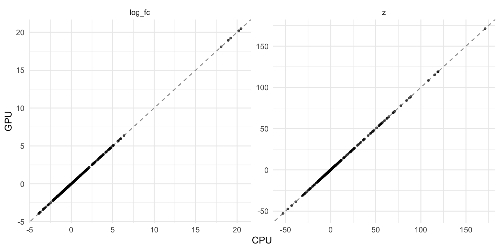

library(bixverse)
library(bixverse.gpu)
library(data.table)
library(ggplot2)
library(SingleCellExperiment)GPU-accelerated NEBULA
2026-09-24
Intro
NEBULA fits a negative binomial gamma mixed model per gene, with the donor as a random effect. Why you’d want that over a Wilcoxon test is covered in the differential expression vignette in bixverse. Read that first. This one only asks two questions: does the GPU version give you the same answer, and is it faster?
nebula_gpu_sc() is a drop-in for bixverse::nebula_sc(). Same arguments, same ScNebula result. Stage two of NEBULA, the per-gene penalised fits, runs on the device via cubecl. Cell ordering, gene batching, the dispersion shrinkage and the Wald test are the CPU code.
Two differences are worth knowing about:
- The device fits run in
f32and the host finishes each one inf64. The numbers land close to the CPU ones, not on them. - REML is not implemented on the device.
params_nebula_gpu()isbixverse::params_nebula()without theremlknob.
The data
Same set-up as the CPU vignette: the Kang, et al. PBMCs, eight lupus donors, each split into an IFN-β stimulated and a control arm. Doublets out, then CD14+ monocytes and their 500 most variable genes.
Load and subset the Kang data (click to expand)
sce <- qs2::qs_read(download_kang_pbmc())
sce <- sce[, sce$multiplets == "singlet" & !is.na(sce$cell)]
dir_kang <- file.path(tempdir(), "kang_gpu")
dir.create(dir_kang, showWarnings = FALSE, recursive = TRUE)
sc_object <- SingleCells(dir_data = dir_kang)
sc_object <- load_sce(
object = sc_object,
sce = sce,
sc_qc_param = params_sc_min_quality(
min_unique_genes = 200L,
min_lib_size = 500L,
min_cells = 20L,
target_size = 1e4
),
.verbose = FALSE
)
mono <- SingleCellsSubset(
sc_object,
grouping_column = "cell",
group = "CD14+ Monocytes"
)
mono <- find_hvg_sc(mono, hvg_no = 500L, .verbose = FALSE)
hvgs <- get_gene_names_from_idx(mono, get_hvg(mono), rust_based = TRUE)
mono
#> Single cell experiment (subset).
#> No cells: 5355
#> No genes: 12132
#> Group: cell = CD14+ Monocytes
#> HVG calculated: TRUE
#> PCA calculated: FALSE
#> Other embeddings: none
#> KNN generated: FALSE
#> SNN generated: FALSE
#> Stale artefacts: noneThe real contrast
Stimulated against control, donor as the random effect. Run both, time both.
time_cpu <- system.time(
res_cpu <- nebula_sc(
object = mono,
subject_col = "ind",
design = ~stim,
genes_to_use = hvgs,
.verbose = TRUE
)
)
time_gpu <- system.time(
res_gpu <- nebula_gpu_sc(
object = mono,
subject_col = "ind",
design = ~stim,
genes_to_use = hvgs,
.verbose = TRUE
)
)
data.table(
backend = c("CPU", "GPU"),
seconds = c(time_cpu[["elapsed"]], time_gpu[["elapsed"]])
)
#> backend seconds
#> <char> <num>
#> 1: CPU 3.448
#> 2: GPU 2.398How close are they?
Join the two result tables on the gene and look at the worst absolute gap per column. Relative gaps are no use here: a gene with an effect of 1e-3 turns an absolute gap in the fourth decimal into a 70% relative one.
res_both <- merge(
res_cpu$results,
res_gpu$results,
by = "gene_id",
suffixes = c("_cpu", "_gpu")
)
cols <- c(
"log_fc",
"z",
"p_value",
"fdr",
"subject_overdispersion",
"cell_overdispersion"
)
rbindlist(lapply(cols, \(col) {
a <- res_both[[paste0(col, "_cpu")]]
b <- res_both[[paste0(col, "_gpu")]]
data.table(
column = col,
max_abs_diff = max(abs(a - b)),
pearson = cor(a, b)
)
}))
#> column max_abs_diff pearson
#> <char> <num> <num>
#> 1: log_fc 0.0006526261 1.000000
#> 2: z 0.0012607748 1.000000
#> 3: p_value 0.0007529370 1.000000
#> 4: fdr 0.0008433680 1.000000
#> 5: subject_overdispersion 0.0055144379 0.999999
#> 6: cell_overdispersion 0.2689521211 1.000000
plot_dt <- rbind(
res_both[, .(stat = "log_fc", cpu = log_fc_cpu, gpu = log_fc_gpu)],
res_both[, .(stat = "z", cpu = z_cpu, gpu = z_gpu)]
)
ggplot(plot_dt, aes(x = cpu, y = gpu)) +
geom_abline(slope = 1, intercept = 0, colour = "grey60", linetype = 2) +
geom_point(size = 0.8, alpha = 0.6) +
facet_wrap(~stat, scales = "free") +
labs(x = "CPU", y = "GPU") +
theme_minimal()
What matters in the end is the calls. Same genes at FDR <= 0.05?
res_both[, .(
genes = .N,
sig_cpu = sum(fdr_cpu <= 0.05),
sig_gpu = sum(fdr_gpu <= 0.05),
sig_both = sum(fdr_cpu <= 0.05 & fdr_gpu <= 0.05),
bound_agree = sum(sigma_at_bound_cpu == sigma_at_bound_gpu),
convergence_agree = sum(convergence_cpu == convergence_gpu)
)]
#> genes sig_cpu sig_gpu sig_both bound_agree convergence_agree
#> <int> <int> <int> <int> <int> <int>
#> 1: 429 299 299 299 429 421Every CPU call is a GPU call and vice versa. The top of the list, ranked by the CPU’s |z|, side by side:
head(
res_both[
order(-abs(z_cpu)),
.(gene_id, log_fc_cpu, log_fc_gpu, z_cpu, z_gpu)
],
8
)
#> gene_id log_fc_cpu log_fc_gpu z_cpu z_gpu
#> <char> <num> <num> <num> <num>
#> 1: ISG15 4.650378 4.650378 171.20680 171.20680
#> 2: ISG20 3.663062 3.663062 119.09117 119.09117
#> 3: APOBEC3A_ENSG00000128383 3.520193 3.520193 118.75017 118.75017
#> 4: IFITM3 3.377843 3.377843 115.25370 115.25370
#> 5: CXCL10 5.614680 5.614680 108.35227 108.35227
#> 6: IFI6 2.671006 2.671006 88.77986 88.77986
#> 7: LY6E 3.366099 3.366099 87.34538 87.34538
#> 8: CCL8 5.968108 5.968108 84.06402 84.06402The interferon response, ISG15, APOBEC3A and CXCL10, identical to the printed precision. The one place the two disagree is the convergence code, on a handful of genes:
res_both[
convergence_cpu != convergence_gpu,
.(gene_id, convergence_cpu, convergence_gpu, z_cpu, z_gpu, fdr_cpu, fdr_gpu)
]
#> Key: <gene_id>
#> gene_id convergence_cpu convergence_gpu z_cpu z_gpu fdr_cpu
#> <char> <int> <int> <num> <num> <num>
#> 1: DDHD1 1 -10 1.398976 1.398976 1.994853e-01
#> 2: DHRS7B 1 -10 -3.617794 -3.617794 5.928685e-04
#> 3: DR1 -10 1 -4.940335 -4.940335 2.052579e-06
#> 4: FGFBP2 -10 1 -2.131773 -2.131774 4.770352e-02
#> 5: PGM2 1 -10 -2.555115 -2.555114 1.644028e-02
#> 6: PHC1 1 -10 -1.597487 -1.597487 1.385847e-01
#> 7: PLGRKT -10 1 4.651144 4.651145 8.138629e-06
#> 8: TMEM41A 1 -10 -1.422732 -1.422731 1.913983e-01
#> fdr_gpu
#> <num>
#> 1: 1.994852e-01
#> 2: 5.928685e-04
#> 3: 2.052578e-06
#> 4: 4.770342e-02
#> 5: 1.644033e-02
#> 6: 1.385850e-01
#> 7: 8.138607e-06
#> 8: 1.913984e-01The codes swap between 1 and -10 in both directions. Both sit above the -20 line that marks a likely failure, and z and the FDR on these genes still agree to five or six significant digits. Nothing here changes a call.
No contrast at all
The CPU vignette’s key check: control cells only, eight donors split four against four at random. Any call is a false positive. If the GPU’s f32 fits nudged the overdispersions the wrong way, this is where extra calls would show up.
obs_parent <- sc_object[[]]
donors <- sort(unique(obs_parent$ind))
group_a <- donors[c(1, 3, 5, 7)]
sc_object[["cell_stim"]] <- paste(obs_parent$cell, obs_parent$stim, sep = "__")
sc_object[["fake"]] <- ifelse(obs_parent$ind %in% group_a, "a", "b")
mono_ctrl <- SingleCellsSubset(
sc_object,
grouping_column = "cell_stim",
group = "CD14+ Monocytes__ctrl"
)
null_cpu <- nebula_sc(
object = mono_ctrl,
subject_col = "ind",
design = ~fake,
genes_to_use = hvgs,
.verbose = TRUE
)
null_gpu <- nebula_gpu_sc(
object = mono_ctrl,
subject_col = "ind",
design = ~fake,
genes_to_use = hvgs,
.verbose = TRUE
)
data.table(
backend = c("CPU", "GPU"),
false_positives = c(
null_cpu$results[fdr <= 0.05, .N],
null_gpu$results[fdr <= 0.05, .N]
)
)
#> backend false_positives
#> <char> <int>
#> 1: CPU 6
#> 2: GPU 6Timing
On this data, 500 genes over 5355 cells, the CPU took 3.4 s and the GPU 2.4 s. One run each on an Apple Silicon laptop, device set-up included. Across renders of this vignette the order has flipped both ways, so call it a wash at this size. The whole sweep is seconds either way, and stage one, the batching and the Wald test stay on the CPU in both, so the GPU only ever takes over part of the run. Larger cell counts and longer gene lists are where stage two grows, but that isn’t measured here. Benchmark on your own data before committing to the GPU path.
Where next
REML on the device isn’t there yet; use the CPU path if you need it. NEBULA on MetaCells stays CPU-only for now too.